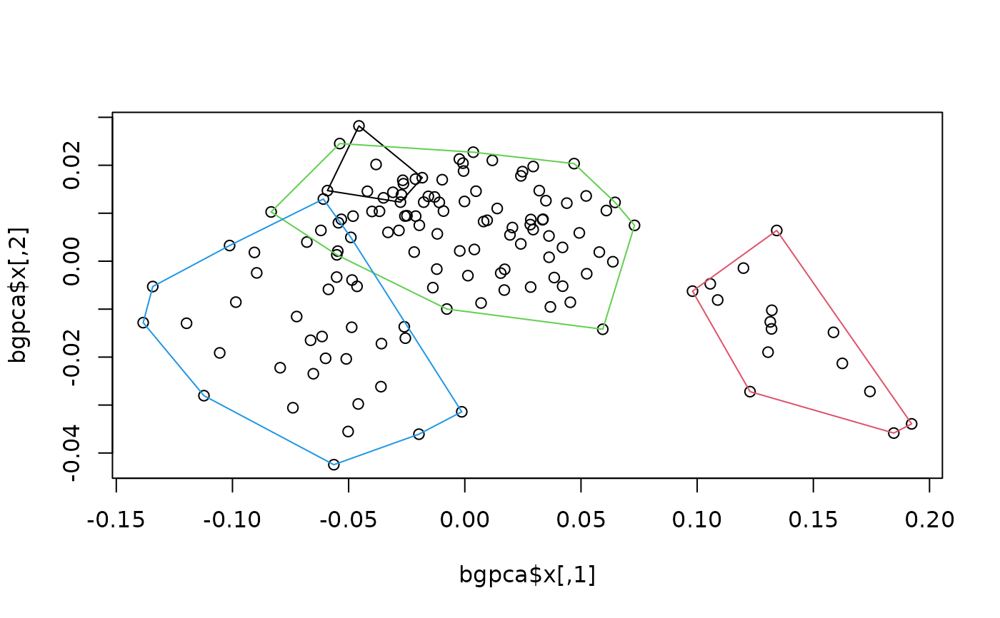

Performs between group PCA allowing for leave-one-out cross-validation, which is useful one the number of variables exceeds the number of observations (i.e. alleviates spurious separation between groups).
bg_prcomp(
x,
groups,
gweights = TRUE,
LOOCV = FALSE,
recompute = FALSE,
corr = FALSE
)A matrix with variables as columns and observations as rows.
Factor; classification of observations of x into a
priori groups.
Logical; whether to weight each group by its number of observations.
Logical; whether to apply leave-one-out cross-validation.
Logical; whether to re-compute rotation matrix using the scores resulting from LOOCV.
Logical; whether to use correlation instead of covariance matrix as input.
A "bg_prcomp" object formatted following the "prcomp"
class:
$sdev: the standard deviations of the principal components
(i.e. the square roots of the eigenvalues of the covariance/correlation
matrix).
$rotation: a n x (g - 1) matrix of eigenvector
coefficients (with g being the number of groups.
$center: the mean values of the original variables for the
entire sample (i.e. the grand mean).
$totvar: the mean values of the original variables for
each group.
$grcenters: the sum of the variances from all the original
variables.
bgPCA finds the liner combination of variables (which in the
context of morphospace will generally be a series of shapes
arranged as 2-margin matrix) maximizing variation between groups'
centroids, and then project the actual observation into the resulting
synthetic axes. This method is preferred here to LDA/CVA as a way to
produce ordinations maximizing separation between groups because it avoids
spherization of shape variation carried out for the former methods.
Recently, it has been discovered that bgPCA produces spurious separation between groups when the number of variables exceeds the number of observations (which is a common situation in geometric morphometrics analyses). This problem can be alleviated by carrying out a leave-one-out cross-validation (LOOCV; i.e. each observation is excluded from the calculation of bgPCA prior to its projection in the resulting ordination as a way to calculate its score).
Mitteroecker, P., & Bookstein, F. (2011). Linear discrimination, ordination, and the visualization of selection gradients in modern morphometrics. Evolutionary Biology, 38(1), 100-114.
Bookstein, F. L. (2019). Pathologies of between-groups principal components analysis in geometric morphometrics. Evolutionary Biology, 46(4), 271-302.
Cardini, A., O’Higgins, P., & Rohlf, F. J. (2019). Seeing distinct groups where there are none: spurious patterns from between-group PCA. Evolutionary Biology, 46(4), 303-316.
Cardini, A., & Polly, P. D. (2020). Cross-validated between group PCA scatterplots: A solution to spurious group separation?. Evolutionary Biology, 47(1), 85-95.
Rohlf, F. J. (2021). Why clusters and other patterns can seem to be found in analyses of high-dimensional data. Evolutionary Biology, 48(1), 1-16.
Thioulouse, J., Renaud, S., Dufour, A. B., & Dray, S. (2021). Overcoming the spurious groups problem in between-group PCA. Evolutionary Biology, 48(4), 458-471.
#load data
data("shells")
#extract species classification and shapes
species <- shells$data$species
shapes <- shells$shapes$coe
#perform between-groups PCA
bgpca <- bg_prcomp(x = shapes, groups = species)
#look at the results
names(bgpca) #the contents of the resulting object
#> [1] "sdev" "rotation" "x" "center" "grcenters" "totvar"
exp_var(bgpca) #variance explained by each axis
#> variance cummulative
#> bgPC1 88.52150 88.52150
#> bgPC2 4.67040 93.19190
#> bgPC3 2.80097 95.99287
plot(bgpca$x) #ordination
hulls_by_group_2D(bgpca$x, species) #add convex hulls for species
